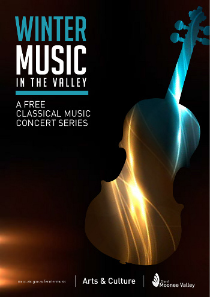

Concert Posters
The orchestra has performed a wide range of concerts. To provide a taste of the many styles and formats, we have assembled this collection of past concert posters from our archives together with some sample recordings and videos.
August 2018 - Beautiful Melodies
- Don Giovanni Overture - Mozart
- Violin Concerto No. 1 - Prokofiev (featuring soloist Anna Morton)
- Symphony No. 7 - Beethoven
June 2018 - Mozart, Mendelssohn and More
With West Melbourne Schools Orchestra
- Marriage of Figaro Overture - Mozart
- Fingal's Cave - Mendelssohn
May 2018 - Tubby the Tuba and Other Super Heroes
- Tubby the Tuba - George Kleinsinger
- Superman
- Battle of the Heroes (Star Wars)
- Dance of the Tumblers - Tchaikovsky
November 2017 - Stage Door
- American in Paris - Gershwin
- HMS Pinafore Overture - Gilbert and Sullivan
- Polonaise from Eugene Onegin - Tchaikovsky
- In the Steppes of Central Asia - Borodin
- Fidelio Overture - Beethoven
- Horn Concerto No. 1 (1st Movement) - Strauss (featuring Kristie Baker)
August 2017 - Beautiful Melodies
- Hebrides Overture - Elgar
- Cello Concerto in E min - Elgar
- Symphony No. 9 (New World Symphony) - Dvorak
April 2017 - Kids in Space (a family concert)
- Star Wars suite - Williams
- Mars (from The Planets) - Holst
- Theme from Also sprach Zarathustra (from 2001 Space Odyssey) - Strauss
November 2016 - European Romance
- L'Arlésienne Suite No. 2 - Bizet (including the famous Farandole movement)
- Symphony No. 4 in A Major (Italian) - Mendelssohn
- The Magic Flute (K. 620) Overture - Mozart
September 2016 - Memories and Music from WWI
- Light Cavalry Overture - von Suppé
- Nimrod (from Enigma Variations) - Elgar
- Jupiter (from The Planets) - Holst
August 2016 - Last Night of the Proms
- Symphony No. 5 (First Movement) - Tchaikovsky
- Finlandia - Sibelius
- Shepherd's Hey - Grainger
- Children of Sanchez - Mangione
- Pomp and Circumstance - Elgar

May 2016 - The Snowman
- The Snowman - music by Howard Blake
- Medley of tunes from the movie FROZEN
- Thunder and Lightning Polka - Strauss
- Symphony No. 6 Fourth Movement (Thunder Storm) - Beethoven
November 2015 - Some Work of Noble Note
- Suite from Carmen - Bizet
- Oboe Concerto - Albioni (with soloist Joshua de Graaf)
- Symphony in D minor - Franck
August 2015 - Animal Antics Kids' Concert
- Selections of The Carnival of the Animals - Saint-Saens
- Selections from Swan Lake Suite - Tchaikovsky
- Flight of the Bumblebee - Rimsky-Korsakov
- The Thieving Magpie Overture - Rossini
Two highlights if you don't want to watch it all:

April 2015 - Memories and Music from WWI
- Light Cavalry Overture - Suppe
- Small Town - Sculthorpe
- The Lark Ascending - Vaughan Williams (with soloist Cameron Jamieson)
- Enigma Variations - Elgar
November 2014 - Scheherazade
- Aotearoa Overture - Lilburn
- Horn Concerto no. 4 - Mozart (with soloist Sydney Braunfeld)
- Scheherazade - Rimsky-Korsakov (with soloist Rohan Carr)
August 2014 - Symphonic Bites
- 5th Symphony (1st movement) - Beethoven
- Dance of the Comedians - Smetana
- The Magic Island - Stanhope
- Cello Concerto in C (1st movement) - Haydn
- Selections from West Side Story - Bernstein
July 2014 - Sunday Romance (Winter Music in the Valley)
- Violin Concerto No. 1 - Bruch (with soloist Cameron Jamieson)
- Prince Igor Overture - Borodin

December 2013 - Christmas Celebration
- Emperor Waltzes - Strauss
- Crown Imperial Coronation March - Walton
- Three Dances from The Nutcracker - Tschaikovsky
- Radetzky March - Strauss
- Hallelujah Chorus - Handel
September 2013 - Spring Concert
- Academic Festival Overture - Brahms
- Karelia Suite - Sibelius
- Bassoon Concerto - Mozart
- Hungarian March - Berlioz

May 2013 - Lemony Snicket: The Composer Is Dead
- The Composer Is Dead - Snicket and Stookey
- 1812 Overture - Tchaikovsky
- Shepherds Hey - Grainger
- Hoe-Down from Rodeo - Copland
- Bassoon Concerto, 3rd Movement - Mozart

October 2012 - Halloween
- Berceuse and Finale from The Firebird Suite - Stravinsky
- Night on Bald Mountain - Mussorgsky
- Thriller - Jackson
- Danse Macabre - Saint Saens
- Funeral March of a Marionette - Gounod
- Highlights from Wicked the Musical - Schwartz
- Pavane - Faure
May 2012 - Classical Masters
- Egmont Overture - Beethoven
- Magic Flute Overture - Mozart
- Unfinished Symphony - Schubert
- Oboe Concerto - Albinoni

December 2011 - Merry Melodies
- Winter Wonderland - Bernard (arr. Custer)
- Espana Rhapsody - Chabrier
- Jupiter - Holst
- Die Fledermaus Overture - Strauss
- Sleigh Ride - Anderson
September 2011 - The Proms
With Essendon Choral Society, Bella Mammas and Voce di Vino Rosso.
- New World Symphony - Dvorak
- Pomp and Circumstance - Elgar
- Sailor's Hornpipe - Wood
- Nimrod - Elgar

March 2011 - Sailing Around the World in 60 minutes
- Sailor's Hornpipe - Wood
- In the Hall of the Mountain King - Grieg
- Espana Cani - Marquina
- Morning - Grieg
- Themes from Star Wars - Williams
October 2010 - Music from Stage and Screen
With Essendon Choral Society and Voce di Vino Rosso.
- West Side Story Medley - Bernstein
- Theme from The West Wing - Walden
- Marriage of Figaro Overture - Mozart
- Themes from Star Wars - Williams
- Anthem from the musical Chess - Andersson & Ulvaeus
- Hallelujah Chorus from Messiah - Handel